공조냉동기계기사(구) (2019-08-04 기출문제)
1과목: 기계열역학
1. 질량 4kg의 액체를 15℃에서 100℃까지 가열하기 위해 714kJ의 열을 공급하였다면 액체의 비열(kJ/kgㆍK)은 얼마인가?
- 1.1
- 2.1
- 3.1
- 4.1
(정답률: 71%)

2. 800 KPa, 350℃의 수증기를 200KPa로 교축한다. 이 과정에 대하여 운동 에너지의 변화를 무시할 수 있다고 할 때 이 수증기의 Joule-Thomson 계수(K/KPa)는 얼마인가? (단, 교축 후의 온도는 344℃이다.)
- 0.0⑤
- 0.01
- 0.02
- 0.03
(정답률: 56%)
3. 이상적인 카르노 사이클 열기관에서 사이클당 585.35J의 일을 얻기 위하여 필요로 하는 열량이 1kJ이다. 저열원의 온도가 15℃라면 고열원의 온도(℃)는 얼마인가?
- 422
- 595
- 695
- 722
(정답률: 45%)
4. 배기량(displacement volume)이 1200cc, 극간체적(clearance volume)이 200cc인 가솔린 기관의 압축비는 얼마인가?
- 5
- 6
- 7
- 8
(정답률: 56%)
5. 열역학적 상태량은 일반적으로 강도성 상태량과 용량성 상태량으로 분류할 수 있다. 강도성 상태량에 속하지 않는 것은?
- 압력
- 온도
- 밀도
- 체적
(정답률: 72%)
6. 국소 대기압력이 0.099MPa일 때 용기 내 기체의 게이지 압력이 1MPa이었다. 기체의 절대압력(MPa)은 얼마인가?
- 0.901
- 1.099
- 1.135
- 1.275
(정답률: 74%)
7. 표준대기압 상태에서 물 1kg이 100℃로부터 전부 증기로 변하는데 필요한 열량이 0.652kJ이다. 이 증발과정에서의 엔트로피 증가량(J/K)은 얼마인가?
- 1.75
- 2.75
- 3.75
- 4.00
(정답률: 57%)
8. 다음 냉동 사이클에서 열역학 제1법칙과 제2법칙을 모두 만족하는 Q1, Q2, W는?
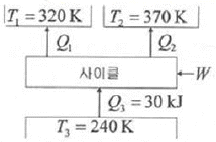
- Q1=20kJ, Q2=20kJ, W=20kJ
- Q1=20kJ, Q2=30kJ, W=20kJ
- Q1=20kJ, Q2=20kJ, W=10kJ
- Q1=20kJ, Q2=15kJ, W=5kJ
(정답률: 63%)
9. 체적이 1m3인 용기에 물이 5kg 들어 있으며 그 압력을 측정해보니 500kPa이었다. 이 용기에 있는 물 중에 증기량(kg)은 얼마인가? (단, 500kPa에서 포화액체와 포화증기의 비체적은 각각 0.001093m3/kg, 0.37489m3/kg이다.)
- 0.0⑤
- 0.94
- 1.87
- 2.66
(정답률: 42%)
10. 압축비가 18인 오토사이클의 효율(%)은? (단, 기체의 비열비는 1.41이다.)
- 65.7
- 69.4
- 71.3
- 74.6
(정답률: 64%)
11. 5kg의 산소가 정압하에서 체적이 0.2m3에서 0.6m3로 증가했다. 이 때의 엔트로피의 변화량(kJ/K)은 얼마인가? (단, 산소는 이상기체이며, 정압비열은 0.92kJ/kgㆍK이다.)
- 1.857
- 2.746
- 5.⑤4
- 6.507
(정답률: 61%)
12. 최고온도(TH)와 최저온도(TL)가 모두 동일한 이상적인 가역사이클 중 효율이 다른 하나는? (단, 사이클 작동에 사용되는 가스(기체)는 모두 동일하다.)
- 카르노 사이클
- 브레이튼 사이클
- 스털링 사이클
- 에릭슨 사이클
(정답률: 42%)
13. 냉동기 팽창밸브 장치에서 교축과정을 일반적으로 어떤 과정이라고 하는가?
- 정압과정
- 등엔탈피 과정
- 등엔트로피 과정
- 등온과정
(정답률: 61%)
14. 그림과 같이 다수의 추를 올려놓은 피스톤이 끼워져 있는 실린더에 들어있는 가스를 계로 생각한다. 초기 압력이 300kPa이고, 초기 체적은 0.⑤m3이다. 피스톤을 고정하여 체적을 일정하게 유지하면서 압력이 200kPa로 떨어질 때까지 계에서 열을 제거한다. 이 때 계가 외부에 한 일(kJ)은 얼마인가?
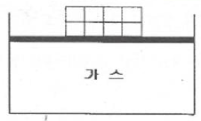
- 0
- 5
- 10
- 15
(정답률: 39%)
15. 공기 표준 브레이튼(Brayton) 사이클 기관에서 최고 압력이 500kPa, 최저압력은 100kPa이다. 비열비(k)가 1.4일 때, 이 사이클의 열효율(%)은?
- 3.9
- 18.9
- 36.9
- 26.9
(정답률: 56%)
16. 증기가 디퓨저를 통하여 0.1MPa, 150℃, 200m/s의 속도로 유입되어 출구에서 50m/s의 속도로 빠져나간다. 이 때 외부로 방열된 열량이 500J/kg일 때 출구 엔탈피(kJ/kg)는 얼마인가? (단, 입구의 0.1MPa, 150℃ 상태에서 엔탈피는 2776.4kJ/kg이다.)
- 2751.3
- 2778.2
- 2794.7
- 2812.4
(정답률: 47%)
17. 두께 10mm, 열전도율 15W/mㆍ℃인 금속판 두 면의 온도가 각각 70℃와 50℃일 떄 전열면 1m2당 1분 동안에 전달되는 열량(kJ)은 얼마인가?
- 1800
- 14000
- 92000
- 162000
(정답률: 63%)
18. 공기 3kg이 300K에서 650K까지 온도가 올라갈 때 엔트로피 변화량(J/K)은 얼마인가? (단, 이 때 압력은 100kPa에서 550kPa로 상승하고, 공기의 정압비열은 1.0⑤kJ/kgㆍK, 기체상수는 0.287kJ/kgㆍK이다.)
- 712
- 863
- 924
- 966
(정답률: 53%)
19. 냉동효과가 70kW인 냉동기의 방열기 온도가 20℃, 흡열기 온도가 -10℃이다. 이 냉동기를 운전하는데 필요한 압축가의 이론 동력(kW)은 얼마인가?
- 6.02
- 6.98
- 7.98
- 8.99
(정답률: 58%)
20. 체적이 0.5m3인 탱크에, 분자량이 24kg/kmol인 이상기체 10kg이 들어있다. 이 기체의 온도가 25℃일 때 압력(kPa)은 얼마인가? (단, 일반기체상수는 8.3143kJ/kmolㆍK이다.)
- 126
- 845
- 2066
- 49578
(정답률: 63%)
2과목: 냉동공학
21. 다음 중 일반적으로 냉방시스템에서 물을 냉매로 사용하는 냉동방식은?
- 터보식
- 흡수식
- 전자식
- 증기압축식
(정답률: 70%)
22. 전열면적 40m2, 냉각수량 300L/min, 열통과율 3140 kJ/m2ㆍhㆍ℃인 수냉식 응축기를 사용하며, 응축부하가 439614 kJ/h일 때 냉각수 입구 온도가 23℃이라면 응축온도(℃)는 얼마인가? (단, 냉각수의 비열은 4.186 kJ/kgㆍK이다.)
- 29.42℃
- 25.92℃
- 20.35℃
- 18.28℃
(정답률: 46%)
23. 스테판-볼츠만(Stefan-Boltzmann)의 법칙과 관계있는 열 이동 현상은?
- 열 전도
- 열 대류
- 열 복사
- 열 통과
(정답률: 71%)
24. 냉동장치에서 일원 냉동사이클과 이원 냉동사이클을 구분 짓는 가장 큰 차이점은?
- 증발기의 대수
- 압축기의 대수
- 사용 냉매 개수
- 중간냉각기의 유무
(정답률: 60%)
25. 물속에 지름 10cm, 길이 1m인 배관이 있다. 이 때 표면온도가 114℃로 가열되고 있고, 주위 온도가 30℃라면 열전달율(kW)은? (단, 대류 열전달계수 1.6kW/m2ㆍK)이며, 복사열전달은 없는 것으로 가정한다.)
- 36.7
- 42.2
- 45.3
- 96.3
(정답률: 53%)
26. 다음 그림과 같은 2단압축 1단 팽창식 냉동장치에서 고단측의 냉매 순환량(kg/h)은? (단, 저단측 냉매 순환량은 1000kg/h이며, 각 지점에서의 엔탈피는 아래 표와 같다.)
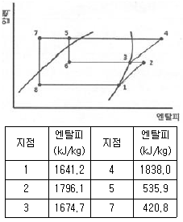
- 1⑤8.2
- 1207.7
- 1488.5
- 1594.6
(정답률: 46%)
27. 불응축가스가 냉동장치에 미치는 영향으로 틀린 것은?
- 체적효율 상승
- 응축압력 상승
- 냉동능력 감소
- 소요동력 증대
(정답률: 70%)
28. 다음 중 동일한 조건에서 열전도도가 가장 낮은 것은?
- 물
- 얼음
- 공기
- 콘크리트
(정답률: 58%)
29. 냉동기에서 유압이 낮아지는 원인으로 옳은 것은?
- 유온이 낮은 경우
- 오일이 과충전 된 경우
- 오일에 냉매가 혼입된 경우
- 유압조정밸브의 개도가적은 경우
(정답률: 36%)
30. 2단 압축 냉동장치에 관한 설명으로 틀린 것은?
- 동일한 증발온도를 얻을 때 단단압축 냉동장치 대비 압축비를 감소시킬 수 있다.
- 일반적으로 두 개의 냉매를 사용하여 -30℃ 이하의 증발온도를 얻기 위해 사용된다.
- 중간 냉각기는 증발기에 공급하는 액을 과냉각 시키고 냉동 효과를 증대시킨다.
- 중간 냉각기는 냉매증기와 냉매액을 분리시켜 고단측 압축기 액백 현상을 방지한다.
(정답률: 61%)
31. 다음 그림은 단효용 흡수식 냉동기에서 일어나는 과정을 나타낸 것이다. 각 과정에 대한 설명으로 틀린 것은?
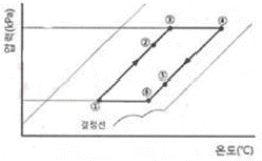
- ① → ②과정 : 재생기에서 돌아오는 고온 농용액과 열교환에 의한 희용액의 온도증가
- ② → ③과정 : 재생기 내에서 비등점에 이르기까지의 가열
- ③ → ④과정 : 재생기 내에서 가열에 의한 냉매 응축
- ④ → ⑤과정 : 흡수기에서의 저온 희용액과 열교환에 의한 농용액의 온도감소
(정답률: 59%)
32. 냉동기유의 역할로 가장 거리가 먼 것은?
- 윤활 작용
- 냉각 작용
- 탄화 작용
- 밀봉 작용
(정답률: 70%)
33. 냉동능력이 5kW인 제빙장치에서 0℃의 물 20kg을 모두 0℃얼음으로 만드는데 걸리는 시간(min)은 얼마인가? (단, 0℃ 얼음의 융해열 334kJ/kg이다.)
- 22.2
- 18.7
- 13.4
- 11.2
(정답률: 59%)
34. 냉장고의 방열벽의 열통과율이 0.000117kW/m2ㆍK일 때 방열벽의 두께(cm)는? (단, 각값은 아래 표와 같으며, 방열재 이외의 열전도 저항은 무시하는 것으로 한다.)
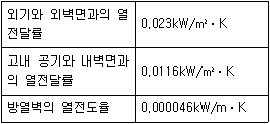
- 35.6
- 37.1
- 38.7
- 41.8
(정답률: 46%)
35. 다음 카르노 사이클의 P-V 선도를 T-S 선도로 바르게 나타낸 것은?
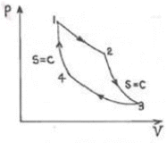
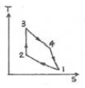
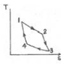
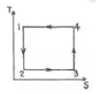
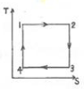
(정답률: 68%)
36. 다음 중 흡수식냉동기의 냉매 흐름 순서로 옳은 것은?
- 발생기→흡수기→응축기→증발기
- 발생기→흡수기→증발기→응축기
- 흡수기→발생기→응축기→증발기
- 응축기→흡수기→발생기→증발기
(정답률: 54%)
37. 다음 중 이중 효용 흡수식 냉동기는 단효용 흡수식 냉동기와 비교하여 어떤 장치가 복수기로 설치되는가?
- 흡수기
- 증발기
- 응축기
- 재생기
(정답률: 60%)
38. 다음 중 스크류 압축기의 구성요소가 아닌 것은?
- 스러스트 베어링
- 숫 로터
- 암 로터
- 크랭크축
(정답률: 65%)
39. 1대의 압축기로 -20℃, -10℃, 0℃, 5℃의 온도가 다른 저장실로 구성된 냉동장치에서 증발압력조정밸브(EPR)를 설치하지 않는 저장실은?
- -20℃의 저장실
- -10℃의 저장실
- 0℃의 저장실
- 5℃의 저장실
(정답률: 55%)
40. 증발기의 착상이 냉동장치에 미치는 영향에 대한 설명으로 틀린 것은?
- 냉동능력 저하에 따른 냉장(동)실내 온도 상승
- 증발온도 및 증발압력의 상승
- 냉동능력당 소요동력의 증대
- 액압축 가능성의 증대
(정답률: 55%)
3과목: 공기조화
41. 다음 송풍기의 풍량 제어 방법 중 송풍량과 축동력의 관계를 고려하여 에너지절감 효과가 가장 좋은 제어방법은? (단, 모두 동일한 조건으로 운전된다.)
- 회전수 제어
- 흡입베인 제어
- 취출댐퍼 제어
- 흡입댐퍼 제어
(정답률: 69%)
42. 난방부하가 10kW인 온수난방 설비에서 방열기의 출ㆍ입구 온도차가 12℃이고, 실내ㆍ외 온도차가 18℃일 때 온수순환량(kg/s)은 얼마인가? (단, 물의 비열은 4.2kJ/kgㆍ℃이다.)
- 1.3
- 0.8
- 0.5
- 0.2
(정답률: 45%)
43. 다음 중 고속덕트와 저속덕트를 구분하는 기준이 되는 풍속은?
- 15m/s
- 20m/s
- 25m/s
- 30m/s
(정답률: 64%)
44. 덕트의 부속품에 관한 설명으로 틀린 것은?
- 댐퍼는 통과풍량의 조정 또는 개폐에 사용되는 기구이다.
- 분기 덕트 내의 풍량제어용으로 주로 익형 댐퍼를 사용한다.
- 방화구획관통부에는 방화댐퍼 또는 방연댐퍼를 설치한다.
- 가이드 베인은 곡부의 기류를 세분해서 와류의 크기를 적게 하는 것이 목적이다.
(정답률: 60%)
45. 어떤 단열된 공조기의 장치도가 다음 그림과 같을 때 수분비(U)를 구하는 식으로 옳은 것은? (단, h1, h2 : 입구 및 출구 엔탈피(kJ/kg), x1, x2 : 입구 및 출구 절대습도(kg/kg), qs: 가열량(W), L:가습량(kg/h), hL:가습수분(L)의 엔탈피(kJ/kg), G: 유량(kg/h)이다.
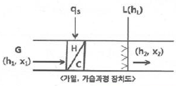
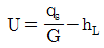
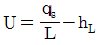
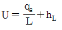
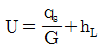
(정답률: 35%)
46. 난방설비에 관한 설명으로 옳은 것은?
- 증기난방은 실내 상ㆍ하 온도차가 적은 특징이 있다.
- 복사난방의 설비비는 온수나 증기난방에 비해 저렴하다.
- 방열기의 트랩은 증기의 유량을 조절하는 역할을 한다.
- 온풍난방은 신속한 난방 효과를 얻을 수 있는 특징이 있다.
(정답률: 60%)
47. 공조부하 중 재열부하에 관한 설명으로 틀린 것은?
- 냉방부하에 속한다.
- 냉각코일의 용량산출 시 포함시킨다.
- 부하 계산 시 현열, 잠열부하를 고려한다.
- 냉각된 공기를 가열하는데 소요되는 열량이다.
(정답률: 57%)
48. 덕트 설계 시 주의사항으로 틀린 것은?
- 덕트의 분기지점에 댐퍼를 설치하여 압력 평행을 유지시킨다.
- 압력손실이 적은 덕트를 이용하고 확대시와 축소 시에는 일정 각도 이내가 되도록 한다.
- 종횡비(aspect ratio)는 가능한 크게 하여 덕트 내 저항을 최소화 한다.
- 덕트 굴곡부의 곡률반경은 가능한 크게 하며, 곡률이 매우 작을 경우 가이드 베인을 설치한다.
(정답률: 66%)
49. 아래의 특징에 해당하는 보일러는 무엇인가?
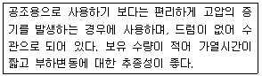
- 주철제 보일러
- 연관 보일러
- 수관 보일러
- 관류 보일러
(정답률: 53%)
50. 보일러의 능력을 나타내는 표시방법 중 가장 적은 값을 나타내는 출력은?
- 정격 출력
- 과부하 출력
- 정미 출력
- 상용 출력
(정답률: 69%)
51. 외기온도 5℃에서 실내온도 20℃로 유지되고 있는 방이 있다. 내벽 열전달계수 5.8W/m2ㆍK, 외벽 열전달계수 17.5W/m2ㆍK, 열전도율이 2.4W/mㆍK이고, 벽 두께가 10cm일 때, 이 벽체의 열저항(m2ㆍK/W)은 얼마인가?
- 0.27
- 0.55
- 1.37
- 2.35
(정답률: 43%)
52. 다음 가습 방법 중 물분무식이 아닌 것은?
- 원심식
- 초음파식
- 노즐분무식
- 적외선식
(정답률: 61%)
53. 다음 공기선도 상에서 난방풍량이 25000m3/h인 경우 가열코일의 열량(kW)은? (단, 1은 외기, 2는 실내 상태점을 나타내며, 공기의 비중량은 1.2kg/m3이다.)
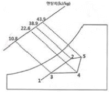
- 98.3
- 87.1
- 73.2
- 61.4
(정답률: 43%)
54. 실내 난방을 온풍기로 하고 있다. 이 때 실내 현열량 6.5kW, 송풍 공기온도 30℃, 외기온도 -10℃, 실내온도 20℃일 때, 온풍기의 풍량(m3/h)은 얼마인가? (단, 공기비열은 1.0⑤kJ/kgㆍK, 밀도는 1.2kg/m3이다.)
- 1940.2
- 1882.1
- 1324.1
- 890.1
(정답률: 46%)
55. 공기조화방식 중 증앙식의 수-공기방식에 해당하는 것은?
- 유인유닛 방식
- 패키지유닛 방식
- 단일덕트 정풍량 방식
- 이중덕트 정풍량 방식
(정답률: 59%)
56. 유인유닛 방식에 관한 설명으로 틀린 것은?
- 각 실 제어를 쉽게 할 수 있다.
- 덕트 스페이스를 작게 할 수 있다.
- 유닛에는 가동부분이 없어 수명이 길다.
- 송풍량이 비교적 커 외기냉방 효과가 크다.
(정답률: 62%)
57. 가로 20m, 세로 7m, 높이 4.3m인 방이 있다. 아래 표를 이용하여 용적기준으로 한 전체 필요 환기량(m3/h)은?
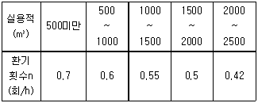
- 421
- 361
- 331
- 253
(정답률: 60%)
58. 공조기용 코일은 관 내 유속에 따라 배열방식을 구분하는데, 그 배열방식에 해당하지 않는 것은?
- 풀서킷
- 더블서킷
- 하프서킷
- 탑다운서킷
(정답률: 58%)
59. 보일러에서 급수내관을 설치하는 목적으로 가장 적합한 것은?
- 보일러수 역류방지
- 슬러지 생성방지
- 부동팽창 방지
- 과열 방지
(정답률: 44%)
60. 다음 중 온수난방과 관계없는 장치는 무엇인가?
- 트랩
- 공기빼기밸브
- 순환펌프
- 팽창탱크
(정답률: 56%)
4과목: 전기제어공학
61. 60Hz, 4극, 슬립 6%인 유도전동기를 어느 공장에서 운전하고자 할 때 예상되는 회전수는 약 몇 rpm인가?
- 240
- 720
- 1690
- 1800
(정답률: 54%)
62. 변압기의 1차 및 2차의 전압, 권선수, 전류를 각각 E1, N1, I1 및 E2, N2, I2라고 할 때 성립하는 식으로 옳은 것은?
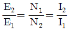
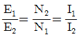
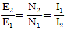
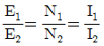
(정답률: 60%)
63. 다음 신호흐름선도와 등가인 블록선도는?
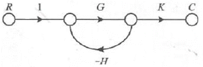
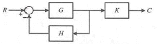
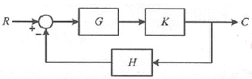
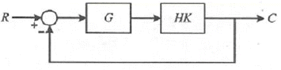
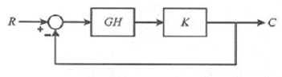
(정답률: 49%)
64. 교류에서 역률에 관한 설명으로 틀린 것은?
- 역률은
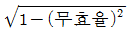
로 계산할수 있다. - 역률을 이용하여 교류전력의 효율을 알 수 있다.
- 역률이 클수록 유효전력보다 무효전력이 커진다.
- 교류회로의 전압과 전류의 위상차에 코사인(cos)을 취한 값이다.
(정답률: 66%)
65. 어떤 전지에 5A의 전류가 10분간 흘렀다면 이 전지에서 나온 전기량은 몇 C인가?
- 1000
- 2000
- 3000
- 4000
(정답률: 67%)
66. 다음 블록선도의 전달함수는?
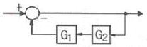
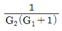
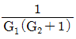
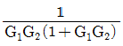
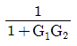
(정답률: 69%)
67. 사이클링(cycling)을 일으키는 제어는?
- I 제어
- PI 제어
- PID 제어
- ON-OFF 제어
(정답률: 61%)
68. 그림과 같은 △결선회로를 등가 Y결선으로 변환할 때 Rc의 저항 값(Ω)은?
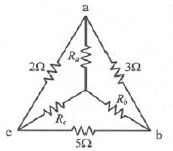
- 1
- 3
- 5
- 7
(정답률: 39%)
69. 그림과 같은 회로에서 부하전류 IL은 몇 A 인가?
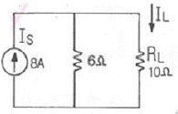
- 1
- 2
- 3
- 4
(정답률: 46%)
70. 온도를 임피던스로 변환시키는 요소는?
- 측온 저항체
- 광전지
- 광전 다이오드
- 전자석
(정답률: 64%)
71. 전류의 측정 범위를 확대하기 위하여 사용되는 것은?
- 배율기
- 분류기
- 전위차계
- 계기용변압기
(정답률: 60%)
72. 근궤적의 성질로 틀린 것은?
- 근궤적은 실수축을 기준으로 대칭이다.
- 근궤적은 개루프 전달함수의 극점으로부터 출발한다.
- 근궤적의 가지 수는 특성방정식의 극점수와 영점 수 중 큰 수와 같다.
- 점근선은 허수축에서 교차한다.
(정답률: 39%)
73. 특성방정식의 근이 복소평면의 좌반면에 있으면 이 계는?
- 불안정하다.
- 조건부 안정이다.
- 반안정이다.
- 안정이다.
(정답률: 53%)
74. 100mH의 인덕턴스를 갖는 코일에 10A의 전류를 흘릴 때 축적되는 에너지(J)는?
- 0.5
- 1
- 5
- 10
(정답률: 35%)
75. 제어시스템의 구성에서 제어요소는 무엇으로 구성되는가?
- 검출부
- 검출부와 조절부
- 검출부와 조작부
- 조작부와 조절부
(정답률: 61%)
76. 제어동작에 대한 설명으로 틀린 것은?
- 비례동작 : 편자의 제곱에 비례한 조작신호를 출력한다.
- 적분동작 : 편차의 적분 값에 비례한 조작신호를 출력한다.
- 미분동작 : 조작신호가 편차의 변화속도에 비례하는 동작을 한다.
- 2위치동작 : ON-OFF 동작이라고도 하며, 편차의 정부(+, -)에 따라 조작부를 전폐 전개하는 것이다.
(정답률: 61%)
77. 일정 전압의 직류전원 V에 저항 R을 접속하니 정격전류 I가 흘렀다. 정격전류 I의 130%를 흘리기 위해 필요한 저항은 약 얼마인가?
- 0.6R
- 0.77R
- 1.3R
- 3R
(정답률: 63%)
78. 제어계에서 미분요소에 해당하는 것은?
- 한 지점을 가진 지렛대에 의하여 변위를 변환한다.
- 전기로에 열을 가하여도 처음에는 열이 올라가지 않는다.
- 직렬 RC회로에 전압을 가하여 C에 충전전압을 가한다.
- 계단 전압에서 임펄스 전압을 얻는다.
(정답률: 45%)
79. 피드백(feedback) 제어시스템의 피드백 효과로 틀린 것은?
- 정상상태 오차 개선
- 정확도 개선
- 시스템 복잡화
- 외부 조건의 변화에 대한 영향 증가
(정답률: 59%)
80. 그림에서 3개의 입력단자 모두 1을 입력하면 출력단자 A와 B의 출력은?
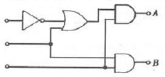
- A=0, B=0
- A=0, B=1
- A=1, B=0
- A=1, B=1
(정답률: 62%)
5과목: 배관일반
81. 지역난방의 특징에 관한 설명으로 틀린 것은?
- 대기 오염물질이 증가한다.
- 도시의 방재수준 향상이 가능하다.
- 사용자에게는 화재에 대한 우려가 적다.
- 대규모 열원기기를 이용한 에너지의 효율적 이용이 가능하다.
(정답률: 73%)
82. 배수 통기배관의 시공 시 유의사항으로 옳은 것은?
- 배수 입관의 최하단에는 트랩을 설치한다.
- 배수 트랩은 반드시 이중으로 한다.
- 통기관은 기구의 오버플로우선 이하에서 통기 입관에 연결한다.
- 냉장고의 배수는 간접배수로 한다.
(정답률: 37%)
83. 냉매배관 시 흡입관 시공에 대한 설명으로 틀린 것은?
- 압축기 가까이에 트랩을 설치하면 액이나 오일이 고여 액백 발생의 우려가 있으므로 피해야 한다.
- 흡입관의 입상이 매우 길 경우에는 중간에 트랩을 설치한다.
- 각각의 증발기에서 흡입주관으로 들어가는 관은 주관의 하부에 접속한다.
- 2대 이상의 증발기가 다른 위치에 있고 압축기가 그 보다 밑에 있는 경우 증발기 출구의 관은 트랩을 만든 후 증발기 상부 이상으로 올리고 나서 압축기로 향하게 한다.
(정답률: 46%)
84. 지름 20mm 이하의 동관을 이음할 때, 기계의 점검 보수, 기타 관을 분해하기 쉽게하기위해 이용하는 동관 이름 방법은?
- 슬리브 이음
- 플레어 이음
- 사이징 이음
- 플랜지 이음
(정답률: 47%)
85. 배수 및 통기배관에 대한 설명으로 틀린 것은?
- 루프 통기식은 여러 개의 기구군에 1개의 통기지관을 빼내어 통기주관에 연결하는 방식이다.
- 도피 통기관의 관경은 배수관의 1/4이상이 되어야 하며 최소 40mm 이하가 되어서는 안된다.
- 루프 통기식 배관에 의해 통기할 수 있는 기구의 수는 8개 이내이다.
- 한랭지의 배수관은 동결되지 않도록 피복을 한다.
(정답률: 57%)
86. 배관 용접 작업 중 다음과 같은 결함을 무엇이라고 하는가?
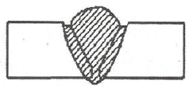
- 용입불량
- 언더컷
- 오버랩
- 피트
(정답률: 67%)
87. 다이헤드형 동력 나사절삭기에서 할 수 없는 작업은?
- 리밍
- 나사절삭
- 절단
- 벤딩
(정답률: 65%)
88. 부력에 의해 밸브를 개폐하여 간헐적으로 응축수를 배출하는 구조를 가진 증기 트랩은?
- 버킷 트랩
- 열동식 트랩
- 벨 트랩
- 충격식 트랩
(정답률: 67%)
89. 방열량이 3kW인 방열기에 공급하여야 하는 온수량(m3/s)은 얼마인가? (단, 방열기 입구온도 80℃, 출구온도 70℃, 온수 평균온도에서 물의 비열은 4.2 kJ/kgㆍK 물의 밀도는 977.5kg/m3이다.)
- 0.002
- 0.025
- 0.073
- 0.098
(정답률: 55%)
90. 주철관의 이음방법 중 고무링(고무개스킷포함)을 사용하지 않는 방법은?
- 기계식이음
- 타이톤이음
- 소켓이음
- 빅토릭이음
(정답률: 37%)
91. 온수난방 배관에서 에어포켓(air pocket)이 발생될 우려가 있는 곳에 설치하는 공기빼기 밸브(◇)의 설치위치로 가장 적절한 것은?
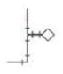
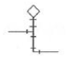
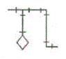
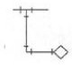
(정답률: 69%)
92. 배관계통 중 펌프에서의 공동현상(cavitation)을 방지하기 위한 대책으로 틀린 것은?
- 펌프의 설치 위치를 낮춘다.
- 회전수를 줄인다.
- 양 흡입을 단 흡입으로 바꾼다.
- 굴곡부를 적게 하여 흡입관의 마찰손실수두를 작게 한다.
(정답률: 66%)
93. 저장 탱크 내부에 가열 코일을 설치하고 코일 속에 증기를 공급하여 물을 가열하는 급탕법은?
- 간접 가열식
- 기수 혼합식
- 직접 가열식
- 가스 순간 탕비식
(정답률: 57%)
94. 냉동장치의 액분리기에서 분리된 액이 압축기로 흡입되지 않도록 하기 위한 액 회수 방법으로 틀린 것은?
- 고압 액관으로 보내는 방법
- 응축기로 재순환시키는 방법
- 고압 수액기로 보내는 방법
- 열교환기를 이용하여 증발시키는 방법
(정답률: 54%)
95. 저압증기의 분기점을 2개 이상의 엘보로 연결하여 한 쪽이 팽창하면 비틀림이 일어나 팽창을 흡수하는 특징의 이음방법은?
- 슬리브형
- 벨로즈형
- 스위블형
- 루프형
(정답률: 63%)
96. 유체 흐름의 방향을 바꾸어 주는 관 이음쇠는?
- 리턴벤드
- 리듀서
- 니플
- 유니온
(정답률: 63%)
97. 고가(옥상) 탱크 급수방식의 특징에 대한 설명으로 틀린 것은?
- 저수시간이 길어지면 수질이 나빠지기 쉽다.
- 대규모의 급수 수요에 쉽게 대응할 수 있다.
- 단수 시에도 일정량의 급수를 계속할 수 있다.
- 급수 공급 압력의 변화가 심하다.
(정답률: 63%)
98. 가스배관에 관한 설명으로 틀린 것은?
- 특별한 경우를 제외한 옥내배관은 매설배관을 원칙으로 한다.
- 부득이하게 콘크리트 주요 구조부를 통과할 경우에는 슬리브를 사용한다.
- 가스배관에는 적당한 구배를 두어야 한다.
- 열에 의한 신축, 진동 등의 영향을 고려하여 적절한 간격으로 지지하여야 한다.
(정답률: 68%)
99. 급수관의 수리 시 물을 배제하기 위한 관의 최소 구배 기준은?
- 1/120 이상
- 1/150 이상
- 1/200 이상
- 1/250 이상
(정답률: 48%)
100. 공장에서 제조 정제된 가스를 저장했다가 공급하기 위한 압력탱크로서 가스압력을 균일하게 하며, 급격한 수요변화에도 제조량과 소비량을 조절하기 위한 장치는?
- 정압기
- 압축기
- 오리피스
- 가스홀더
(정답률: 62%)
먼저 온도 변화량 ΔT를 구한다. 100℃ - 15℃ = 85℃ 이므로 ΔT = 85℃이다.
다음으로 질량 m을 곱해 열량 Q를 구한다. Q = 714kJ, m = 4kg 이므로,
714kJ = 4kg × c × 85℃
c = 714kJ / (4kg × 85℃) = 2.1 kJ/kgㆍK
따라서 액체의 비열은 2.1 kJ/kgㆍK이다.